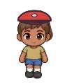
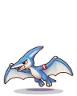

Wiki › Quests › 🦖 Research: Left-Wing Ptera
🦖 Research: Left-Wing Ptera
Level 610 Story 🌀 Multiverse Stadium

The story
Pteras cross the ball while flying, at Nest Cliff. 120 Pteras, and don't step on the eggs!
What to do
- Beat 120x

Left-Wing Ptera
📍 Where to find it and how to get there
👾Who: Left-Wing Ptera — Level 614
🗺️Where: 🦖 Jurassic Maze (🌀 Multiverse Stadium)
🧭Trip: 🌀 In Rio de Janeiro, talk to the Multiverse Guardian.
🧭Path: from there: 🌀 Multiverse Stadium → 🦖 Jurassic Valley → 🦖 Jurassic Maze
📌Inside: on the left of the map (west), near the sign “🦖 NEST CLIFF”
Rewards
- ⭐ 189,611,618 XP
- 🪙 1,842,000 coins
- 3x
 Multiverse Elixir
Multiverse Elixir
When you finish (there may be a surprise!)
Got it! What an amazing creature. On to the next room?
⬅️ First, finish: 🦖 Research: Spitting Dilo
➡️ Then unlocks: 🦖 Research: Center-Back Trike